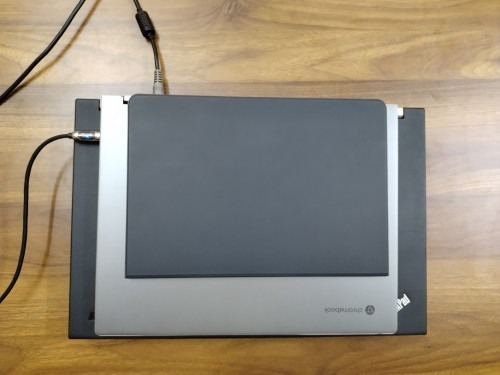
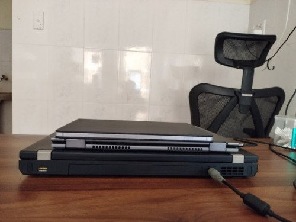
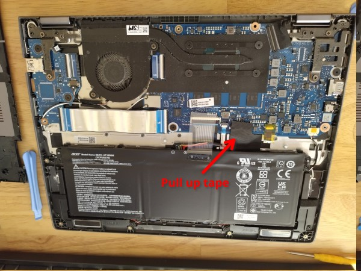
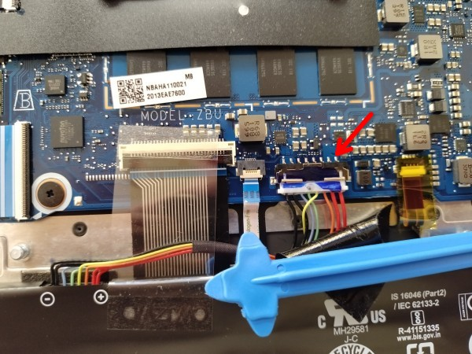
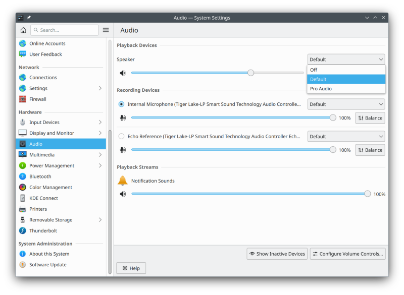
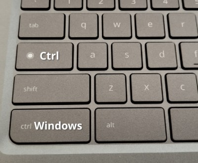
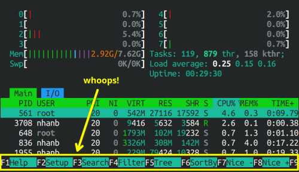

Acer Chromebook Spin 713 "Voxel": an adequate Crostini device, a buggy Linux laptop
August 2023 update: A recent update to the chromebook audio script fixed the crashing bug. There are other minor annoyances with the device of course, but at least it’s usable now. The following is the original article.
TL;DR: bright crisp screen, acceptable keyboard, thin & light build, random touchpad lag on both ChromeOS and Linux, almost usable on MrChromebox UEFI + Arch Linux except for the fact that internal speakers crash most of the time (wired headphones work fine though). It’s absolutely not worth the sticker price at $1,099.99 (lol). Maybe consider buying if you can find it at a heavy discount and the speakers issue has been fixed somehow.
Context#
Around 2022 I was looking for a replacement for my T530—something lighter with a better screen—and saw a listing for a used Acer Chromebook Spin 713-3W at only 10mil VND ($425, give or take). A recently released HiDPI laptop with an i5-1135G7 at 425 freedom dollars? And I get to play with ChromeOS/Crostini on a not-pathetically-weak x86 device? Sign me right up, I thought. The plan was to run ChromeOS/Android apps for GUI stuff, and install my usual tmux+vim based development environment on Crostini.
The hardware#
- Specs: i5-1135G7 (Tiger Lake), Xe graphics, 8GB RAM, 256GB SSD
- Keyboard: acceptable
- Screen: 2256x1504 (3:2) at 13.5“ (200dpi). Subjectively speaking, it’s bright, colorful and delivers crisp text—I have nothing but praise here.
- Speakers: worse and quieter than my Samsung Tab S8 tablet
Here it is sandwiched between a Samsung Tab S8 and a Thinkpad T530:


ChromeOS/Crostini#
I’d just like to interject for a moment. What you’re referring to as Linux, is in fact, CHROME/Linux, or as I’ve recently taken to calling it, CHROME plus Linux. Linux is not an operating system unto itself, but rather another free component of a fully functioning CHROME system made useful by the CHROME v8, css utililties, and other vital system components comprising a full OS as defined by the W3C.
As advertised, the laptop could run ChromeOS apps, Android apps, and Linux apps via containers. By default I got a Debian container, but since I needed up-to-date software for development, I set up an Arch container instead. The process itself was straightforward enough.
Zoom for Android worked as expected, and to my surprise, Tailscale for Android managed to wrangle traffic correctly for programs running inside Crostini too! The only hiccup was that Magic DNS didn’t work, so I needed to put the hostname-IP pairs into /etc/hosts manually. I also had to change the temp dir from /tmp to ~/tmp for Go tools to work, because Crostini programs weren’t allowed to exec files inside /tmp. Once I’d worked out those kinks, I could open up a terminal and start working as if I were on one of my Arch PCs. Hell, even docker/docker-compose Just Worked™ inside the container.
But then came the papercuts.
The touchpad would randomly lag, as in, dragging still worked but there was a noticeable delay between my dragging and seeing the cursor actually moving. The problem would just go away as randomly as it happened.
Back when I used an actual Linux machine, I was used to having 10 virtual
desktops, numbered from 1 to 10, with Alt-n mapped to “jump to desktop #n”, and
Windows-n mapped to “move window to desktop #n” (the 0 key maps to
desktop #10, naturally). While ChromeOS has a “workspaces” feature, there’s no
way to navigate and juggle windows between them precisely and instantly.
Instantly is an important keyword here: many tasks, while doable, suffered
from gratuitous animations and tedious step-by-step navigation. This reminded
me of when I tried to use a Macbook professionally: things kinda worked, but
the experience would always be intrinsically worse.
While Linux GUI programs were automagically put on the ChromeOS applications list as first class citizens, certain quality-of-life features didn’t work. For example, on KDE I used to be able to drag a video streaming link from the browser onto MPV’s taskbar icon to play it. This no longer worked on ChromeOS.
So I jumped ship.
Real Arch Linux on MrChromebox UEFI#
Installing real Linux on this device requires installing the MrChromebox custom UEFI firmware, which in turn requires disabling the firmware write protection. Fortunately, for this device all I needed to do was opening up the laptop and disconnecting the battery:


If you need more detailed instructions, here’s the official manual.
Then go here for instructions on how to download and run the MrChromebox utility script. In my case, I also needed to enable developer mode to get access to the chrosh shell.
After this I got a normal UEFI boot menu so I could pop in an Arch installer USB drive and carried out the installation as usual.
I managed to install KDE plasma and everything worked except for audio: the
usual “default” audio profile wouldn’t show up, even after I installed the
necessary packages: sof-firmware (sound firmware for recent Intel
generations) and alsa-ucm-conf (so-called topologies for these newer
devices). After some desperate googling I found
https://github.com/eupnea-linux/audio-scripts which installed some missing
configs lifted straight from ChromeOS upstream. Sure enough, the device showed
up:

And it would actually play sound… for a while until it crashes. I later found out that wired headphones and HDMI audio work just fine, so only using internal speakers is problematic.
I collected logs and tried googling but nothing comes up that matches my case. Asking in the eupnea discord server yielded an uncertain response:
looks like yet again intel broke something
Oh, and the random touchpad delay issue was still there, so I’m starting to think the touchpad hardware itself is problematic.
And that’s where I’m at. I’ll probably gather more logs and submit an issue to the SOF project. For now, consider this a warning: the laptop as of now is probably not worth buying. Hell, in Vietnam you can get a second hand X1 Carbon 6th gen with an i7-8650U and 16GB of RAM for $460 right now from https://chotot.com; that’s a guaranteed best-in-class keyboard, decent screen and Linux compatibility, at just a slight decrease in performance.
But hey, I would have never known any of this if I hadn’t tried, right?
Aside: Chromebook keyboard quirks on KDE#
The most glaring issue is the absence of the windows key (aka super,
hyper, or meta). It’s not a huge problem for me: I always make capslock
act as a ctrl key, so I can turn the original ctrl into windows instead:

Another problem is that the F1-12 keys are not usable: they are mapped to
function keys in MrChromebox UEFI firmware, and there’s no modifier to use
them as F-keys either. That means no F11 to toggle fullscreen, no Alt-F4, no F9
to toggle drop-down terminal, etc. Fortunately such global shortcuts can be
configured trivially from KDE’s system preferences. On the other hand,
application-specific features that are hardwired to use F-keys are simply
unreachable: htop is one such example.
